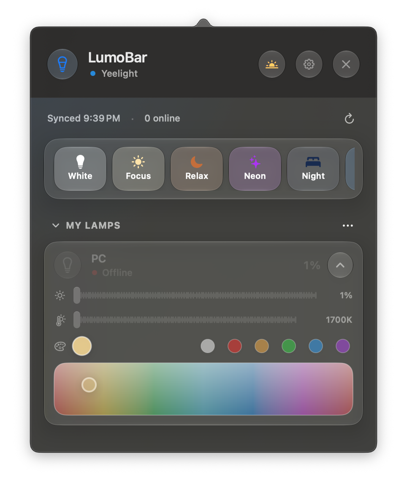

Your smart lights, in the menu bar.
LumoBar switches, dims and colours your lights without opening the vendor apps. It works with Philips Hue, LIFX, Govee, Yeelight, Nanoleaf, WiZ and Tuya, and it is free and open source.

What it does
- Every light in one list. Power, brightness, white temperature and colour for each light, whatever the brand.
- Rooms and scenes. Group lights by room and save scenes you can edit, rename or delete.
- Schedules. Turn lights on or off or apply a scene at a set time, or let adaptive lighting follow the time of day.
- Focus modes. Switch scenes when a macOS Focus turns on or off, through a Shortcuts automation.
- Local first. Hue, Yeelight, Nanoleaf and WiZ are controlled on your home network, no cloud account needed.
- A native Mac app. Written in Swift, lives only in the menu bar, updates itself.
Install
- Download the DMG from the latest release and drag LumoBar to Applications.
- The first time you open it, macOS will block it, because the app is not notarised by Apple. Open System Settings → Privacy & Security and click Open Anyway. You only do this once.
- Click the bulb in the menu bar, open Settings → Providers and connect your lights. The setup guide covers each brand.
Credits
LumoBar is a fork of LampControl by Hugo Informatique. Thank you, Hugo, for building it and releasing it under the MIT licence. The README lists what changed.